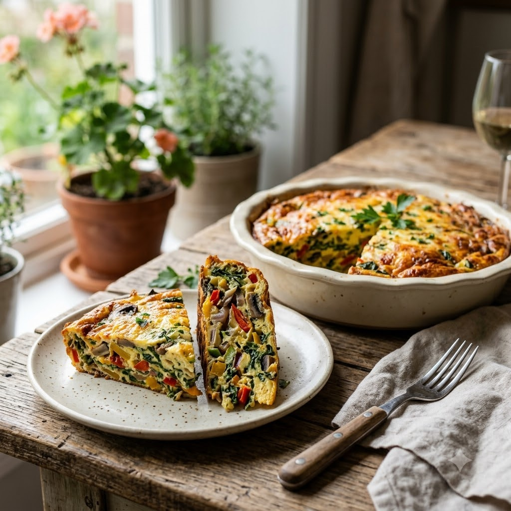

Crustless Vegetable Quiche

Crustless Vegetable Quiche
Airfryer – Bake 170°C 22 min — Serves 4
Gluten-Free • Vegetarian • High-Protein • French
🔥 Airfryer🍽 Serves 4
Ingredients
- 5 eggs
- 1/2 cup milk or cream
- 1/2 cup chopped spinach
- 1/4 cup chopped bell pepper
- 1/4 cup grated cheese
- Salt & pepper to taste
- 1/4 tsp nutmeg (optional)
Method
1Preheat: Preheat the Airfryer to 170°C for 4 minutes before adding the food to the basket.
2Whisk eggs with milk, salt, pepper and nutmeg.
3Stir in spinach, bell pepper and cheese.
4Pour the mixture into a greased oven-safe dish that fits the basket.
5Bake at 170°C for 22 minutes until set in the centre and lightly golden on top.